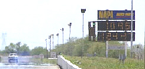
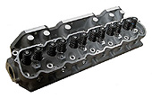
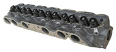
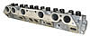
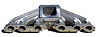

Classic Inlines News - Misc Notes |
Click here to see our Magazine Articles
While there hasn't been any new news lately, we thought we add an update since it's been so long since the last one. The inline sixes seem to be making a huge comeback, as more and more guys are keeping their sixes, rather than swapping them out for small block V8. Much of this has to do with the availability of performance products, which is considerably better than it was ten years ago. And hopefully in the years to come, Classic Inlines will introduce many more. Things like fuel injection, MLS head gaskets, kits for supercharging and turbocharging, and so on. Just in the past ten years we added over thirty new products, like our aluminum cylinder head, valve cover, cold air induction, ignition kits, stainless steel headers, and complete exhaust kits. And we did it while the economy was in a shambles. Imagine what we can do, if and when the economy picks up?
I remember when Will and Kelly's 63 Falcon ran mid 12's in the quarter mile, and shocked everybody. However it wasn't long before Kelly was running in the mid 11's consistently, which we all thought was pretty incredible. Then she shocked us all once more when she broke into the tens. Simply amazing..... As of today her best ET is 10.68, which we all thought was impossible just a few years ago. I also remember when we all thought 200 HP, naturally aspirated, was pretty amazing. Today that's pretty common, thanks to the aluminum head, and 300 HP is just around the corner. As for maximum HP, who knows? However I don't think it will be long before someone builds a small six that's grinding out 650-700 HP, that's streetable. As for me, I've had a blast over the past ten years. I only hope the next ten will be as good. Thanks for all the support. 4-10-2012
|
69 Sports Roof Project Car - Oct 2007
August 2006 C.I. purchased a 69 Sports Roof with the intentions of doing restomod rebuild sometime in the near future. The Sports Roof originally came with an inline six, so we felt it was a perfect platform for a turbo-charged fuel injected rebuilt six. We contacted Mustang & Fords magazine and asked if they were interested in our project for a future tech article, and got their reply without any hesitation. They loved the idea of building one of the hottest inline sixes ever conceived. Our plans were to build a mustang which could be street driven, yet offer stiff competition to its V8 counterparts at the track. At the same time, the little six would offer superior handling due to the reduced nose weight, better gas mileage, and a boat load of bottom end torque. For detailed information on the entire build up, look for the three part article in the October, November, and December 07 issues of Mustangs & Fords magazine. |

|
|  |
63 Falcon runs a 10.95 @ 124mph
Classic Inlines sponsors this street legal falcon which is powered by a turbo charged 250ci inline six. Other major modifications include the first proto type aluminum head, JE forged pistons, ARP studs & bolts, and a Clay Smith cam. The inline six is backed up with a performance C4 tranny, a 9" rear, and Alston Pro-Street ladder
bars. Kelly, the owner and driver, has been racing the falcon since |
2006. Between races her husband, Will, takes care of the mechanicals, but its not unusual to find Kelly under the hood turning the wrenches too. Classic Inlines was fortunate to meet them just about the same time they started racing the falcon, and an agreement was struck to use the falcon as a test bed for our new products.
Future plans call for the installation of a new solid lifter cam, which is needed to take full advantage of the air flow provided by the new aluminum cylinder head. The short term goal is to get the car into the low tens, however once that's accomplished they plan to turn down the boost and lower the speeds. The car has the original interior and paint, which is still in great shape, therefore they prefer leaving it as is, without a roll bar. Hence the long term goal is to run more consistent times, with hopes of winning a few trophies, and Kelly's just the one to do it. Over the past two years, the Falcon has been featured in Mustangs & Fords and Car Craft, and pictures pop up from time to time in other magazines as well, making the Falcon somewhat of a celebrity in the inline world. Congratulations Will and Kelly for a job well done, we look forward to a long and successful relationship. (more pics)
|
I should also mention that since the Falcon is due to have its wings clipped, Will and Kelly are now planning to build another Falcon, or a Delivery Sedan. The car will be owned and sponsored by Classic Inlines, however the plans call for Will to be both the mechanic and driver. Our goal is to reach the low to mid nines, with an all out effort in building a race car under 2200 lbs, verses the current 2800 lbs. Power will be provided with a turbo charged and injected 250ci inline six utilizing the new aluminum head and a custom Hogan intake. We will be posting pictures and comments in our Project section, for those interested in following along with us as we proceed with the project, begriming sometime this summer. |
Classic Inlines New Aluminum Cylinder Head
Probably the most important news our customers want to know about,
is our new aluminum cylinder head and removable alloy intake manifolds. We
have received three proto types and have a dozen more arriving mid May 2007. These heads will be shipped out to various FordSix forum members for testing. Once we are certain everything is correct, we
will be placing the order for the first batch of production heads, and will begin taking deposits. The first batch should be ready to ship around mid to late Sept.
Its been a long time coming, and I'm sure you are all just as anxious as we are. For complete details, see our Aluminum Cylinder Head section. |

 |


|
Now Available - Our New Aluminum Cylinder Heads.
Our new aluminum cylinder heads (144/170/200/221/250ci) are now available and allow for substantial gains in performance. Our prototype testing went very well and the power gains were just as we predicted. We are now concentrating our efforts on the intake manifolds. The universal 2V/4V intake will be ready right around the first of the year, with the triple Weber/TBI intakes following in a month or so. We will also be offering several new products which are related to the new head and intakes, such as an EFI system.
|
Ford Six Performance Name Change
As you may have noticed, "Ford Six Performance Parts" recently changed its name to "Classic Inlines". This decision was made for two reasons. First, to deal with an issue raised this past summer by the Ford Motor Company.
In which they demanded all companies using a "Ford" trade name, to cease doing so or face legal actions. However, our primary reason for the change, is the planned expansion of our product line to eventually include Chevrolet and Dodge products. Beginning with two new aluminum cylinder heads. More information.

|
|
SEMA and PRI conventions in 2005-2006
Classic Inlines attended both SEMA and PRI in 2005 and PRI again in 2006, seeking
out new
performance parts from various manufacturers. Both shows were a huge success, as
several major companies agreed
to produce products for the inline
six applications.
For more info, please visit our New Products and R&D sections
for a list of all the new and exciting
products headed your way.
|
 |
Classic Inlines Display Engine for SEMA
Classic Inlines was asked to display
an engine featuring our newest
products
at
the SEMA 2005 convention and trade show
in
Las Vegas, Nevada.
The motor drew a lot
of attention
from convention attendees
and the media.
The induction system from TWM was custom built and completed just
days before the show, as was the proto type of our Alloy Valve Cover. The oil pan arrived with only one day left to have chromed, however Metro Plating in Mesa AZ got the job done with two hours to spare.
|
| The dual roller chain was displayed by cutting away half of
the the timing cover. We also used as much chrome as possible, which included the alternator, oil pan, oil filter cover,
coil cover, dip stick, breather caps, t-stat housing, and wire looms. Jet Hot ceramic coating was also used on the headers, intake manifold, and water pump. The triple TBI induction system will be offered as an optional induction package for the new aluminum cylinder head. With either triple Weber carbs, or
triple Weber style throttle bodies with injectors for electronic fuel injection systems. The chrome alternator was also a new product recently added to our product line, and a chrome starter was on order, but failed to arrive in time. |
 |
Click here to see our Magazine Articles


|
|